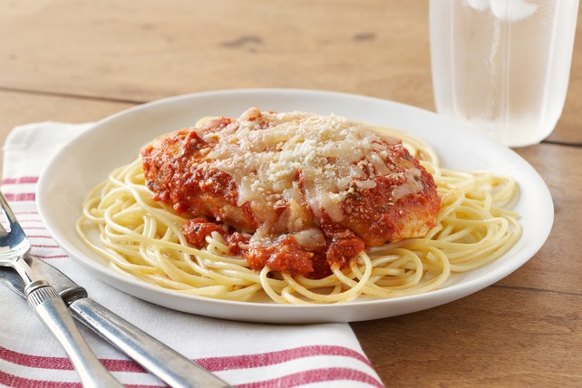

Chicken Parmesan

This easy to make chicken parmesan is not only healthy but also very delicious.
This recipe leans on the more healthier side with the ingredients but dont let that deter you.
Baked chicken cutlets are breaded and baked keeping the chicken juicy and full of flavor.
Ingredients
- 4 chicken breasts, about 8 oz each, sliced in half lengthwise to make 8
- 3/4 cup seasoned breadcrumbs, I used whole wheat, you can also use GF crumbs
- 1/4 cup grated Parmesan cheese
- 2 tbsp butter, melted (or olive oil)
- 3/4 cup reduced fat mozzarella cheese, I used Polly-o
- 1 cup marinara or Filetto di Pomodoro
- cooking spray
Instructions
- Preheat oven to 450°F. Spray a large baking sheet lightly with spray.
- Combine breadcrumbs and parmesan cheese in a bowl. Melt the butter in another bowl. Lightly brush the butter onto the chicken, then dip into breadcrumb mixture. Place on baking sheet and repeat with the remaining chicken.
- Lightly spray a little more oil on top and bake in the oven for 25 minutes.
- Remove from oven, spoon 1 tbsp sauce over each piece of chicken and top each with 1 1/2 tbsp of shredded mozzarella cheese.
- Bake 5 more minutes or until cheese is melted.
Next Recipe: Lasagne
Previous Recipe: Lemon Grilled Chicken
Return to Home Page